FUEL PUMP (for Double Tank Type) > REASSEMBLY |
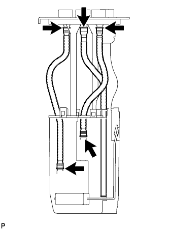 |
| 1. INSTALL NO. 1 FUEL SUCTION SUPPORT |
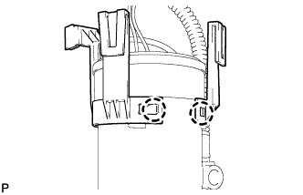 |
Attach the 2 claws to the claw holes to install the fuel suction support.
| 2. INSTALL FUEL MAIN VALVE ASSEMBLY |
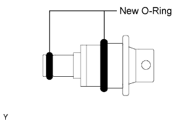 |
Apply a light coat of gasoline to 2 new O-rings, and install them onto the fuel main valve.
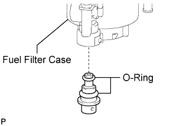 |
Install the fuel main valve to the fuel filter case.
| 3. INSTALL FUEL PUMP |
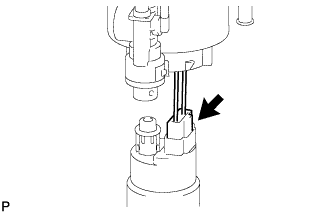 |
Connect the fuel pump wire harness connector to the fuel pump.
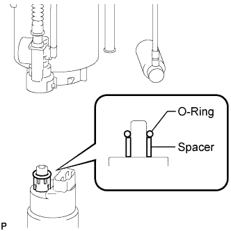 |
Apply a light coat of gasoline to a new O-ring. Then install the spacer and O-ring to the fuel pump.
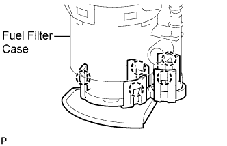 |
Attach the 5 claws to the claw holes and install the fuel pump to the fuel filter case.
| 4. INSTALL NO. 1 FUEL SUB-TANK |
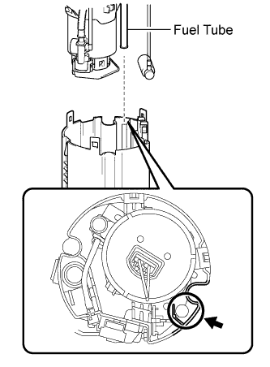 |
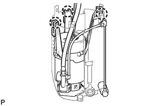 |
Attach the 3 claws to the claw holes and install the fuel sub-tank.
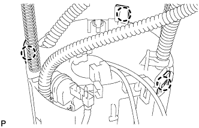 |
Attach the 3 claws to the claw holes.
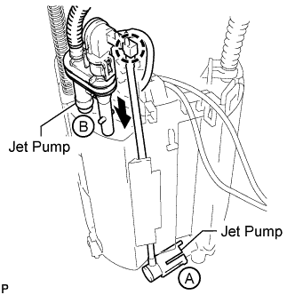 |
Connect the jet pump (labeled B) to the sub-tank.
Attach the claw on the end of the tube to the claw hole.
Connect the jet pump (labeled A) to the sub-tank.
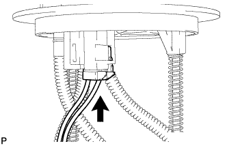 |
Connect the fuel pump connector.
| 5. INSTALL FUEL SENDER GAUGE ASSEMBLY |
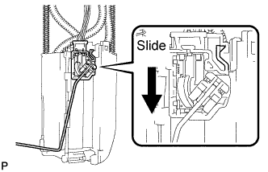 |
Set the sender gauge to the fuel sub-tank. Then slide the sender gauge downward to install it.
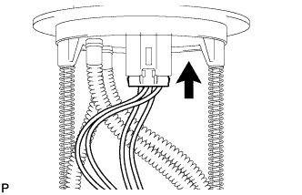 |
Connect the fuel sender gauge connector.